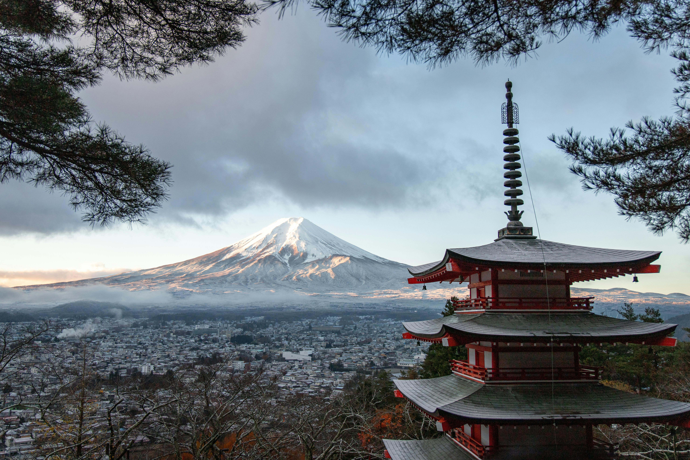
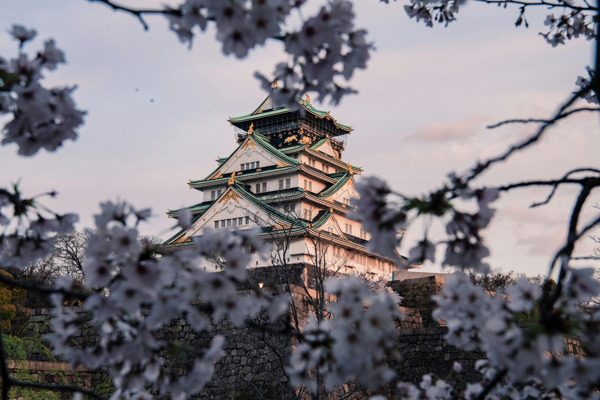
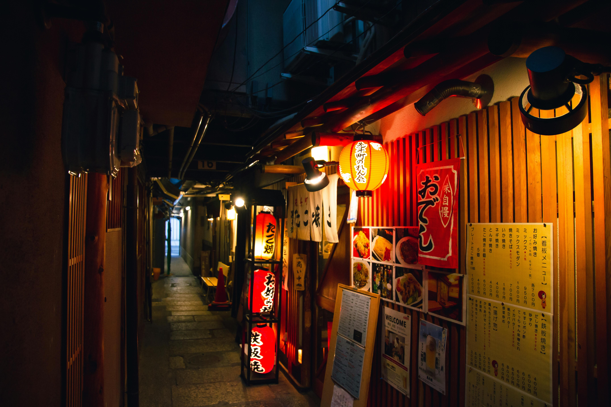
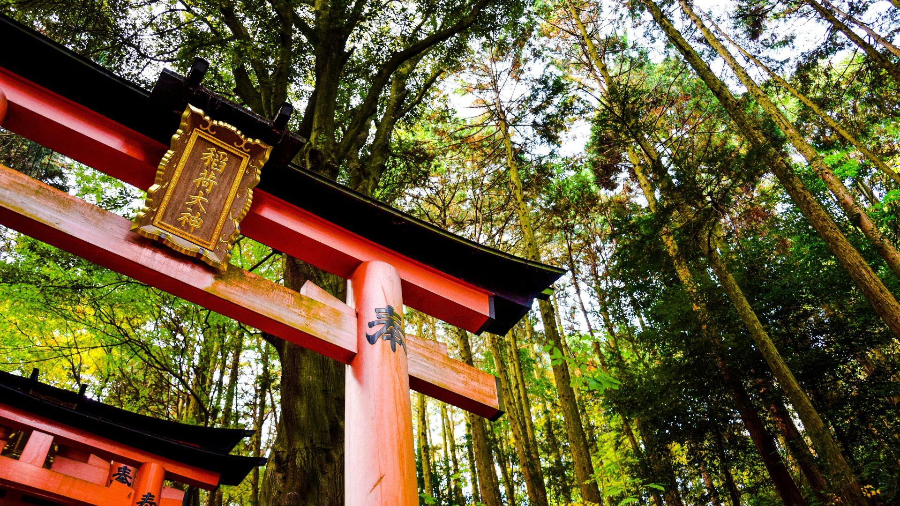

Monte Fuji
O Monte Fuji é o cartão-postal do Japão e a montanha mais famosa do país. Com 3.776 metros de altura, ele atrai milhares de turistas todos os anos.
Saiba maisUm espaço para compartilhar experiências, desafios e descobertas de quem vive no Japão. Aqui você encontra curiosidades da cultura japonesa, informações úteis e histórias reais do dia a dia.
Tradições, costumes e curiosidades que fazem parte da vida no Japão.
Experiências reais de quem vive no Japão com a família.
Dicas, informações e desafios do mercado de trabalho japonês.
Comida, festivais, costumes e o cotidiano da vida japonesa.
Quatro informações importantes para quem pensa em viver no Japão.↓
Trabalhar no Japão é mais do que um sonho, pra muitos é um projeto de vida
que exige coragem, planejamento e responsabilidade.
Mesmo com tantas dúvidas,
regras e cuidados ao escolher uma agência, quem se prepara com atenção dá
passos seguros rumo a uma grande conquista.
Não importa se você é descendente
ou não, o mais importante é agir com informação, buscar apoio confiável e
manter a determinação. Cada história de quem embarcou começou exatamente onde
você está agora, pesquisando, perguntando, avaliando e acreditando.
Empreiteiras ou haken gaisha - as empresas de RH que oferecem empregos para estrangeiros no
Japão.
As empreiteiras, conhecidas no Japão como haken gaisha (派遣会社), são empresas
especializadas em recursos
humanos que atuam na terceirização de mão de obra. Elas são responsáveis por recrutar,
alocar e administrar
trabalhadores em outras empresas, além de gerenciar contratos, salários e obrigações
trabalhistas.
Esse modelo de trabalho já é consolidado há décadas no Japão e teve papel essencial no
crescimento da economia
japonesa.
Aprender japonês pode parecer desafiador, mas hoje existem cursos acessíveis, práticos e
pensados
para diferentes perfis de alunos, desde quem está começando do zero até quem busca fluência
e
certificações como o JLPT.
Reunimos os melhores cursos de japonês disponíveis online,
com professores experientes, diferentes metodologias de ensino e opções para todos os
níveis.
Aqui você encontra desde programas completos e reconhecidos até alternativas gratuitas para
quem quer começar a estudar japonês
com flexibilidade e qualidade.
Descubra as 10 principais regras sociais do Japão que todo visitante precisa conhecer.
Desde o silêncio em espaços públicos até a etiqueta à mesa, esses costumes revelam como
os japoneses valorizam respeito, harmonia e consideração pelo próximo.
Evitar essas gafes garante que sua experiência seja agradável, respeitosa e alinhada com a
cultura local.
Esse modelo de trabalho já é consolidado há décadas no Japão e teve papel essencial no crescimento da economia japonesa.
No Japão a culinária é repleta de sabores e de cuidados ao fazer cada prato,
refletindo não apenas tradição, mas também respeito pelos ingredientes e pela
experiência de quem irá comer.
Cada refeição é preparada com atenção à estética,
equilíbrio e frescor, valorizando o sabor natural dos alimentos...
O Hinamatsuri (雛祭り), também conhecido como Dia das Meninas ou Festival
das Bonecas, é um dos festivais mais delicados e culturalmente ricos do Japão.
Celebrado anualmente no dia 3 de março, o Hinamatsuri é um evento dedicado à felicidade,
saúde e boa sorte das meninas...
O Shinkansen, conhecido como "trem-bala" japonês, é um sistema de transporte
ferroviário de alta velocidade que revolucionou as viagens no Japão.
Inaugurado em 1964,
com a linha Tokaido Shinkansen ligando Tóquio a Osaka, o Shinkansen reduziu drasticamente os
tempos de viagem e impulsionou o desenvolvimento econômico e social do país...
Essa é uma das perguntas mais feitas por quem pensa em vir para o Japão. A resposta curta é: sim, vale a pena financeiramente se houver organização, mas a qualidade de vida depende muito do perfil da pessoa ou da família.
Mesmo com a inflação mais controlada que em outros países, o mercado no Japão ficou mais caro nos últimos anos...
O Japão é um país extremamente organizado e com regras sociais muito bem definidas. Muitas atitudes que no Brasil passam despercebidas podem causar desconforto, advertências e até problemas legais por aqui. Conhecer essas regras é essencial para quem vive, trabalha ou pretende morar no Japão.
No Japão, o bem-estar coletivo vem sempre em primeiro lugar. Respeitar as regras...
Dicas para participar
Yukata: É comum vestir esse quimono leve de verão para entrar no clima festivo.
Chegada Antecipada: Para garantir bons lugares (muitas vezes em lonas de piquenique), os locais chegam
horas antes.
Comida de Rua:
Os festivais são acompanhados por barracas (yatai) que vendem iguarias como yakisoba,
takoyaki e choco-banana.
Somos uma empresa dedicada a ajudar nossos funcionários e clientes.
Fornecer serviço e funcionários qualificados que possam atender as necessidades dos nossos clientes.
Temos como objetivo conseguir uma colocação que agrade nosso funcionário.
Com experiência no mercado, a HTour trabalha ajudando pessoas a encontrar vagas em fábricas e outros setores produtivos no Japão, orientando os interessados sobre processos de inscrição e encaminhamento para as oportunidades disponíveis. O objetivo é facilitar o acesso ao mercado de trabalho japonês para brasileiros que desejam viver e trabalhar no país.

O Monte Fuji é o cartão-postal do Japão e a montanha mais famosa do país. Com 3.776 metros de altura, ele atrai milhares de turistas todos os anos.
Saiba mais
O Castelo de Himeji é considerado o castelo mais famoso e mais bem preservado de todo o Japão. Localizado na cidade de Himeji na província de Hyōgo.
Saiba mais
Shibuya é um dos bairros mais famosos de Tóquio e um dos centros urbanos mais movimentados do Japão.
Saiba mais.jpg)
O Parque de Nara é um dos destinos turísticos mais famosos do Japão. Localizado na cidade histórica de Nara, o parque é conhecido mundialmente pelos seus veados...
Saiba mais
A Floresta de Bambu de Arashiyama é um dos cenários naturais mais famosos do Japão. Localizada no distrito de Arashiyama, na cidade de Kyoto...
Saiba mais.jpg)
O Templo do Pavilhão Dourado, conhecido em japonês como Kinkaku-ji, é um dos templos mais famosos e fotografados do Japão. Localizado na cidade histórica de Kyoto...
Saiba maisNeste vídeo eu trago uma reflexão sobre algumas mudanças e decisões recentes relacionadas aos estrangeiros que vivem no Japão.
O assunto tem gerado bastante debate e até protestos em algumas comunidades, e aqui compartilho minha visão sobre esse cenário.
Nossa rotina de vida. hoje vou mostrar um pouco de como é viver aqui, as pequenas coisas do cotidiano e as experiências que fazem parte da vida de quem escolheu trabalhar e construir uma vida no Japão.
Nem sempre é fácil, mas cada dia traz uma nova história para contar.
Nem sempre as coisas acontecem como esperamos. Às vezes tentamos, insistimos e mesmo assim os resultados não aparecem.
Por isso estou refletindo sobre a possibilidade de começar uma nova etapa em outra província do Japão, sempre pedindo a Deus sabedoria para tomar a decisão certa.
Hoje foi um dia muito especial e cheio de emoções para nossa família aqui no Japão.
Foi o dia da despedida do meu filho do Hoikuen (creche japonesa), marcando o fim de uma etapa muito importante na vida dele.